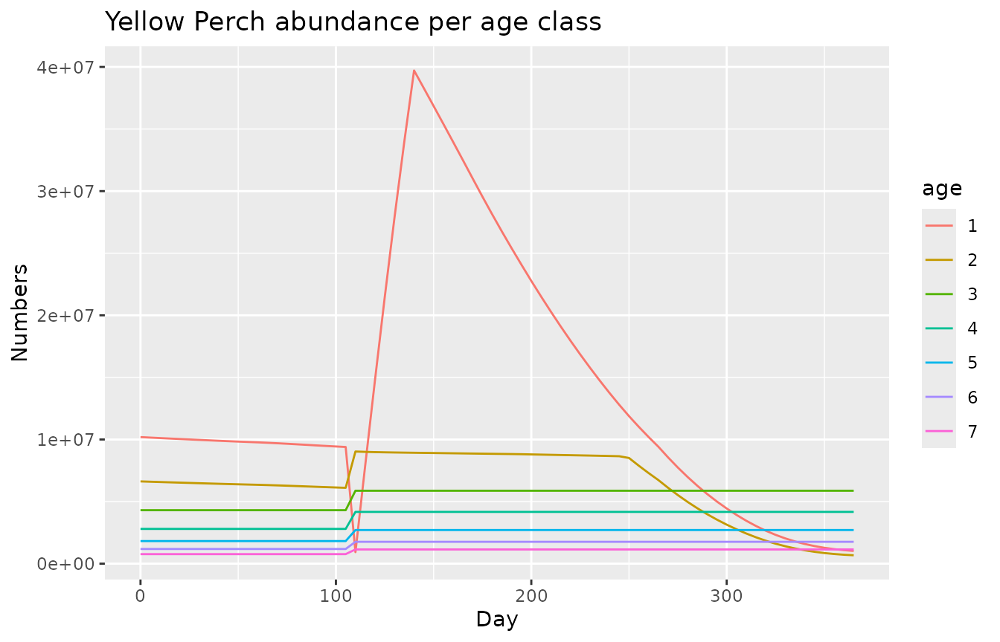
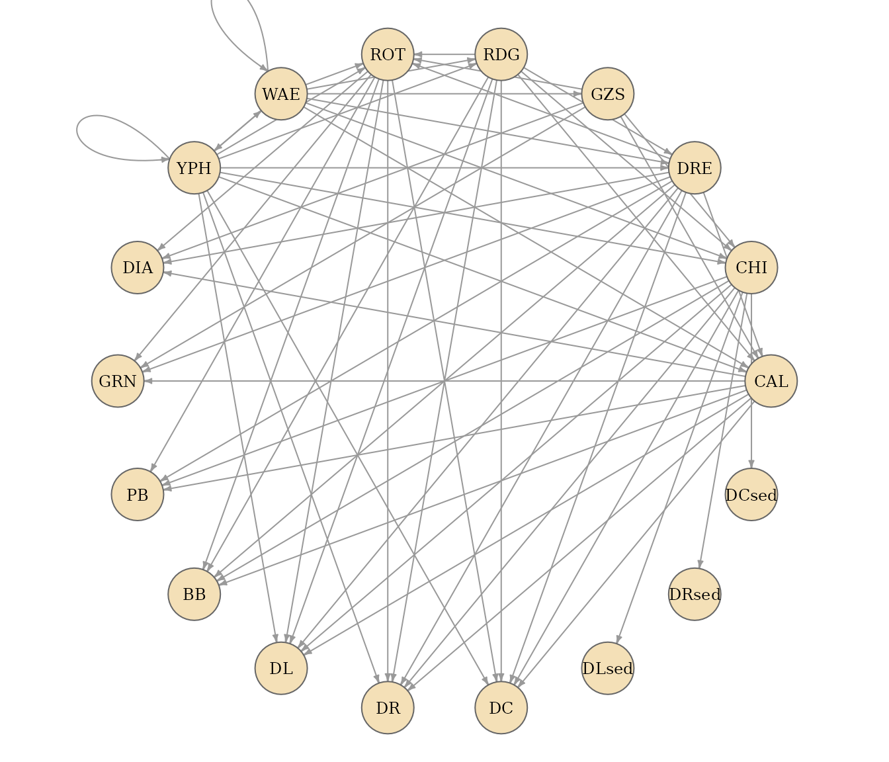

Goal
The goal of atlantio is to easily manipulate Atlantis models (Audzijonyte et al. 2019). This means reading, editing and validating Atlantis inputs and outputs (atlantis + i/o = atlantio).
A major initial objective while working on the package was to be able
to readily set up a semi-automatic calibration of the Lake Erie model
using calibrar as described in Morell et al. (2026).
This vignette is a quick tour of what the package currently does:
- build an
Atlantisobject from input and output files, - read and write
.prmparameter files, - extract time series and biomass tables from model outputs,
- derive diet tables and food webs from the biology parameters,
- list Atlantis parameters, generate template files and prepare a calibration.
Example files
The package ships with a tiny Atlantis model (inputs and outputs of a
short run). atlantis_examples() returns the path to these
files, so every example below can be run as is.
atlantis_examples("inputs") |> list.files()
#> [1] "tiny_biol.prm" "tiny_fisheries.csv" "tiny_force.prm"
#> [4] "tiny_groups.csv" "tiny_hydro.nc" "tiny_init.nc"
#> [7] "tiny_physics.prm" "tiny_run.prm" "tiny_solar.ts"
#> [10] "tiny.bgm"
atlantis_examples("outputs") |> list.files()
#> [1] "export.ts" "inputs.ts"
#> [3] "log.txt" "output.nc"
#> [5] "outputAgeBiomIndx.txt" "outputAnnualAgeBiomIndx.txt"
#> [7] "outputBiomIndx.txt" "outputBoxBiomass.txt"
#> [9] "outputDietCheck.txt" "outputMigration.txt"
#> [11] "outputMort.txt" "outputMortPerPred.txt"
#> [13] "outputPredPropCheck.txt" "outputPROD.nc"
#> [15] "outputSpecificMort.txt" "outputSpecificPredMort.txt"
#> [17] "outputSSB.txt" "outputTOT.nc"
#> [19] "outputVertSize.txt" "outputYOY.txt"
#> [21] "tiny_biol.xml" "tiny_groups.xml"
#> [23] "tiny_run.xml" "tiny.bgm"Building a model
An Atlantis object is a container with one slot per kind
of Atlantis file (geometry, run file, biology parameters, group file,
main output, biomass tables, diet tables, etc.).
new_atlantis() creates an empty one and printing it shows
which components are available.
mod <- new_atlantis()
mod
#>
#> ── Atlantis Model ──
#>
#> ── Data availability:
#> ✖ Geometry (BGM)
#> ✖ Run file
#> ✖ Biology parameters
#> ✖ Group file
#> ✖ Main output
#> ✖ Diet data
#> ✖ Detailed diet data
#> ✖ Biomass (system-wide)
#> ✖ Biomass (per box)
#> ✖ Biomass (per age)atlantis_load_files() reads files, detects their type
from their extension and content, and stores them in the right slot.
Here we add the geometry, the biology parameters, the group file and the
run file.
mod <- mod |>
atlantis_load_files(c(
atlantis_examples("inputs", "tiny.bgm"),
atlantis_examples("inputs", "tiny_biol.prm"),
atlantis_examples("inputs", "tiny_groups.csv"),
atlantis_examples("inputs", "tiny_run.prm")
))
#> Warning: 8 Unknown parameters: flagratio_warn, K_max_num_zoning, N_to_C, N_to_P,
#> flag_contam_sanity_check, external_box, trackWind, and flag_contamReprodModel
mod
#>
#> ── Atlantis Model ──
#>
#> ── Data availability:
#> ✔ Geometry (BGM)
#> ✔ Run file
#> ✔ Biology parameters
#> ✔ Group file
#> ✖ Main output
#> ✖ Diet data
#> ✖ Detailed diet data
#> ✖ Biomass (system-wide)
#> ✖ Biomass (per box)
#> ✖ Biomass (per age)
#>
#> ── Group details:
#> • 15 groups
#> • 11 group types
#> • 8 predators
#>
#> ── Geometry details:
#> • 11 boxes (including 1 boundary box)
#> • mean depth: -30 mEach component is accessible with @. The geometry is an
sf object, the group file a data frame, and parameter files
are named lists.
mod@geometry[, c("label", "botz", "area")]
#> Simple feature collection with 11 features and 3 fields
#> Geometry type: POLYGON
#> Dimension: XY
#> Bounding box: xmin: 94.61386 ymin: -51.15143 xmax: 95.42824 ymax: -50.81279
#> Geodetic CRS: WGS 84
#> # A tibble: 11 × 4
#> label botz area geometry
#> <chr> <int> <int> <POLYGON [°]>
#> 1 Box0 -30 100000000 ((94.61386 -50.97198, 94.73662 -51.00209, 94.77555 -50…
#> 2 Box1 -30 100000000 ((94.73662 -51.00209, 94.85945 -51.03212, 94.89827 -50…
#> 3 Box2 -30 100000000 ((94.85945 -51.03212, 94.98235 -51.06207, 95.02107 -50…
#> 4 Box3 -30 100000000 ((94.98235 -51.06207, 95.10533 -51.09194, 95.14394 -50…
#> 5 Box4 -30 100000000 ((95.10533 -51.09194, 95.22838 -51.12173, 95.26689 -51…
#> 6 Box5 -30 100000000 ((95.22838 -51.12173, 95.35151 -51.15143, 95.38991 -51…
#> 7 Box6 -30 100000000 ((94.77555 -50.90739, 94.89827 -50.93736, 94.93703 -50…
#> 8 Box7 -30 100000000 ((94.89827 -50.93736, 95.02107 -50.96725, 95.05972 -50…
#> 9 Box8 -30 100000000 ((95.02107 -50.96725, 95.14394 -50.99706, 95.18248 -50…
#> 10 Box9 -30 100000000 ((95.14394 -50.99706, 95.26689 -51.02679, 95.30532 -50…
#> 11 Box10 -30 100000000 ((95.26689 -51.02679, 95.38991 -51.05643, 95.42824 -50…
mod@group[, c("Code", "Name", "GroupType", "NumCohorts", "IsPredator")]
#> Code Name GroupType NumCohorts IsPredator
#> 1 WAE Walleye FISH 8 1
#> 2 YPH Yellow_Perch FISH 7 1
#> 3 GZS Gizzard_Shad FISH 5 1
#> 4 RDG Round_Goby FISH 5 1
#> 5 DRE Dressenids SED_EP_FF 1 1
#> 6 CHI Chironomids MOB_EP_OTHER 1 1
#> 7 DIA Diatom SM_PHY 1 0
#> 8 GRN Chlorophyta SM_PHY 1 0
#> 9 CAL Calanoid MED_ZOO 1 1
#> 10 ROT Rotifer_nauplii SM_ZOO 1 1
#> 11 PB Pelagic_Bacteria PL_BACT 1 0
#> 12 BB Sediment_Bacteria SED_BACT 1 0
#> 13 DL Labile_detritus LAB_DET 1 0
#> 14 DR Refractory_detritus REF_DET 1 0
#> 15 DC Carrion3 CARRION 1 0
mod@biology$mum_YPH
#> [1] 0.006924034 0.002932394 0.001700700 0.001329388 0.000991212 0.001092176
#> [7] 0.000405316
#> attr(,"array_length")
#> [1] 7
mod@run$tstop
#> [1] 365
#> attr(,"comments")
#> [1] "day # 1-year run; set 5 day for a quick smoke test"Files can be added at any time, for instance outputs once the model has been run (see below).
Reading and writing parameter files
.prm files are the main way to configure Atlantis.
read_prm() parses them into a named list where every entry
keeps its comments as an attribute, and write_prm() does
the reverse. This makes it easy to edit a few parameters
programmatically and write a new file.
prm <- read_prm(atlantis_examples("inputs", "tiny_run.prm"))
length(prm)
#> [1] 82
prm$tstop
#> [1] 365
#> attr(,"comments")
#> [1] "day # 1-year run; set 5 day for a quick smoke test"
prm$tstop <- 730
write_prm(prm[c("tstop", "dt", "toutstart", "toutinc")])
#> tstop 730
#> # hour
#> dt 12
#> # day
#> toutstart 0
#> # day
#> toutinc 5Pass a path to file to write to disk instead of the
console.
Working with outputs
Let’s add the main NetCDF output and two biomass tables from the example run.
mod <- mod |>
atlantis_load_files(c(
atlantis_examples("outputs", "output.nc"),
atlantis_examples("outputs", "outputBiomIndx.txt"),
atlantis_examples("outputs", "outputBoxBiomass.txt")
))
modBiomass tables
get_biomass_by_type() returns one of the biomass tables
("biomass_all", "biomass_box",
"biomass_age" or "biomass_age_annual").
mod |>
get_biomass_by_type("biomass_all") |>
dplyr::select(Time, WAE, YPH, GZS, RDG) |>
head()
#> # A tibble: 6 × 5
#> Time WAE YPH GZS RDG
#> <dbl> <dbl> <dbl> <dbl> <dbl>
#> 1 0 1940. 2281. 6050. 34.3
#> 2 5 1958. 2303. 6138. 35.2
#> 3 10 1976. 2325. 6230. 36.1
#> 4 15 1994. 2348. 6331. 37.0
#> 5 20 2013. 2371. 6443. 38.0
#> 6 25 2032. 2395. 6565. 39.0Time series from the NetCDF output
create_time_series() extracts any variable of the main
output as a tidy data frame, optionally restricted to a set of boxes and
layers. Time is in seconds since the start of the run.
names(mod@main_output$var) |> head(10)
#> [1] "volume" "hdsource" "hdsink" "eflux" "vflux"
#> [6] "porosity" "nominal_dz" "dz" "topk" "numlayers"
mod |>
create_time_series(variable = "Temp", box = 2, layer = 1) |>
head()
#> time box layer value variable units
#> 1 0 2 1 15 Temp degrees Celcius
#> 2 432000 2 1 15 Temp degrees Celcius
#> 3 864000 2 1 15 Temp degrees Celcius
#> 4 1296000 2 1 15 Temp degrees Celcius
#> 5 1728000 2 1 15 Temp degrees Celcius
#> 6 2160000 2 1 15 Temp degrees Celciuscreate_time_series_biomass() gathers reserve and
structural nitrogen, numbers and weight for an age-structured group, per
box, layer and age class.
ts_yph <- mod |> create_time_series_biomass(group = "YPH")
head(ts_yph)
#> # A tibble: 6 × 10
#> time box layer group age ResN StructN Nums weight units
#> <dbl> <dbl> <int> <chr> <chr> <dbl> <dbl> <dbl> <dbl> <chr>
#> 1 0 0 1 Yellow_Perch 1 207. 78.0 308824. 10028845. g
#> 2 432000 0 1 Yellow_Perch 1 207. 78.0 308824. 10028845. g
#> 3 864000 0 1 Yellow_Perch 1 207. 78.0 308824. 10028845. g
#> 4 1296000 0 1 Yellow_Perch 1 207. 78.0 308824. 10028845. g
#> 5 1728000 0 1 Yellow_Perch 1 207. 78.0 308824. 10028845. g
#> 6 2160000 0 1 Yellow_Perch 1 207. 78.0 308824. 10028845. g
library(ggplot2)
ts_yph |>
dplyr::summarise(Nums = sum(Nums), .by = c(time, age)) |>
ggplot(aes(x = time / 86400, y = Nums, colour = age)) +
geom_line() +
labs(x = "Day", y = "Numbers", title = "Yellow Perch abundance per age class")
Diet table and food web
The biology parameter file contains the prey availability matrix
(pPREY parameters). create_diet_table()
reshapes it into a prey-by-predator table.
diet <- create_diet_table(mod)
dim(diet)
#> [1] 20 18
diet[1:6, 1:6]
#> WAE YPH GZS RDG DRE CHI
#> pPREY1GZS1 0.000 0.0 0.00 0.0 0 0.05
#> pPREY2GZS1 0.000 0.0 0.00 0.0 0 0.05
#> pPREY1GZS2 0.000 0.0 0.00 0.0 0 0.00
#> pPREY2GZS2 0.000 0.0 0.00 0.0 0 0.00
#> pPREY1WAE1 0.001 0.1 0.10 0.1 0 0.10
#> pPREY2WAE1 0.000 0.0 0.01 0.0 0 0.10create_foodweb() goes one step further and returns the
binary food web as an igraph object, ready for network
analysis or plotting.
fw <- create_foodweb(mod)
fw
#> IGRAPH 1bb2b14 DNW- 18 62 --
#> + attr: name (v/c), weight (e/n)
#> + edges from 1bb2b14 (vertex names):
#> [1] WAE->WAE YPH->WAE WAE->YPH YPH->YPH WAE->GZS WAE->RDG YPH->RDG RDG->DRE
#> [9] WAE->DRE YPH->DRE GZS->CHI RDG->CHI WAE->CHI YPH->CHI CAL->DIA DRE->DIA
#> [17] GZS->DIA ROT->DIA CAL->GRN DRE->GRN GZS->GRN ROT->GRN DRE->CAL GZS->CAL
#> [25] RDG->CAL WAE->CAL YPH->CAL DRE->ROT GZS->ROT RDG->ROT WAE->ROT YPH->ROT
#> [33] CAL->PB CHI->PB DRE->PB ROT->PB CAL->BB CHI->BB DRE->BB RDG->BB
#> [41] ROT->BB CAL->DL CHI->DL DRE->DL RDG->DL ROT->DL YPH->DL CAL->DR
#> [49] CHI->DR DRE->DR RDG->DR ROT->DR YPH->DR CAL->DC CHI->DC DRE->DC
#> [57] RDG->DC ROT->DC YPH->DC
#> + ... omitted several edges
par(mar = c(0, 0, 0, 0))
plot(
fw,
layout = igraph::layout_in_circle(fw),
vertex.size = 16,
vertex.color = "#f4e0b7",
vertex.frame.color = "grey40",
vertex.label.color = "black",
vertex.label.cex = 0.75,
edge.color = "grey60",
edge.arrow.size = 0.3
)
Parameters, templates and calibration
Listing Atlantis parameters
atlantio embeds a description of Atlantis parameters extracted from
the source code. list_atlantis_parameters() returns
metadata about the Atlantis version and a list of parameters with their
description, type and where they are read.
prm_list <- list_atlantis_parameters()
prm_list$meta$atlantis_version
#> [1] 3.6722
length(prm_list$parameters)
#> [1] 686
prm_list$parameters[[1]]
#> $name
#> [1] "include_atmosphere"
#>
#> $description
#> [1] "Switch enabling the atmospheric exchange concentrations block"
#>
#> $source_file
#> [1] "physics_prm"
#>
#> $value_type
#> [1] "int"
#>
#> $dimension
#> [1] "scalar"
#>
#> $units
#> NULL
#>
#> $bm_member
#> [1] "bm->include_atmosphere"
#>
#> $reader
#> $reader$fn
#> [1] "readkeyprm_i"
#>
#> $reader$at
#> [1] "atphysics/atphysics.c:229"
#>
#> $reader$check
#> [1] "none"
#>
#>
#> $conditional_on
#> NULLSee the parameter set vignette for a searchable table.
Generating template files
generate_file() uses these descriptions to generate a
parameter file with recommended values and comments. Values that need to
be provided by the user are marked with
<<TO_EDIT>>. Only the run file is supported for
now.
run_file <- generate_file("run", file = file.path(tempdir(), "run.prm"))
readLines(run_file, n = 12)
#> [1] "# Generated by atlantio 0.1.2.9000"
#> [2] ""
#> [3] "# ========= ContaminantSettings"
#> [4] "track_contaminants 0 \t# Flag to turn on tracking of contaminants.."
#> [5] ""
#> [6] "# ========= DiagnosticOutput"
#> [7] "verbose 0 \t# Detailed logged output"
#> [8] "checkbox 0 \t# Give detailed logged output for this box"
#> [9] "checkstart 0 \t# Start detailed logged output from this day in the model run"
#> [10] "checkstop 0 \t# Stop detailed logged output after this day in the model run"
#> [11] "fishtest 0 \t# Count up total population for each vertebrate after each main subroutine: 0=no, 1=yes"
#> [12] "flaggape 0 \t# Periodically list prey vs gape statistics (tuning diagnostic)"Preparing a calibration
generate_calibration_table() turns a short YAML
specification into the table of parameters to calibrate expected by
calibrar: one row per parameter and position, with bounds,
the transformation applied and the file the parameter belongs to.
readLines(atlantis_examples("calibrate", "mum.yaml")) |> cat(sep = "\n")
#> - name: mum_<GRP>
#> GRP: [GZS, RDG, WAE]
#> min: -6
#> max: -1
#> transf: pow10 # exp or pow2
#> - name: mum_<GRP>
#> GRP: YPH
#> min: -3
#> max: -1
#> transf: pow10 # exp or pow2
#> position: 2
mod |>
generate_calibration_table(atlantis_examples("calibrate", "mum.yaml")) |>
head()
#> name min max position transf source_file
#> 1 mum_GZS -6 -1 1 pow10 biology_prm
#> 2 mum_GZS -6 -1 2 pow10 biology_prm
#> 3 mum_GZS -6 -1 3 pow10 biology_prm
#> 4 mum_GZS -6 -1 4 pow10 biology_prm
#> 5 mum_GZS -6 -1 5 pow10 biology_prm
#> 6 mum_RDG -6 -1 1 pow10 biology_prmtransform_parameter_value() and
inverse_transform_parameter_value() map values between the
calibration scale and the scale used in the parameter file.
transform_parameter_value(-3, "pow10")
#> [1] 0.001
inverse_transform_parameter_value(0.001, "pow10")
#> [1] -3The full workflow (running Atlantis, computing the objective function
and driving calibrar) is described in the calibration vignette.